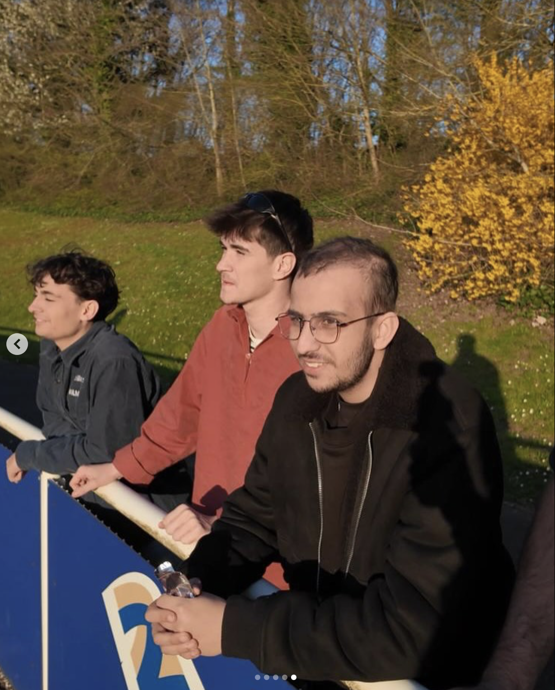
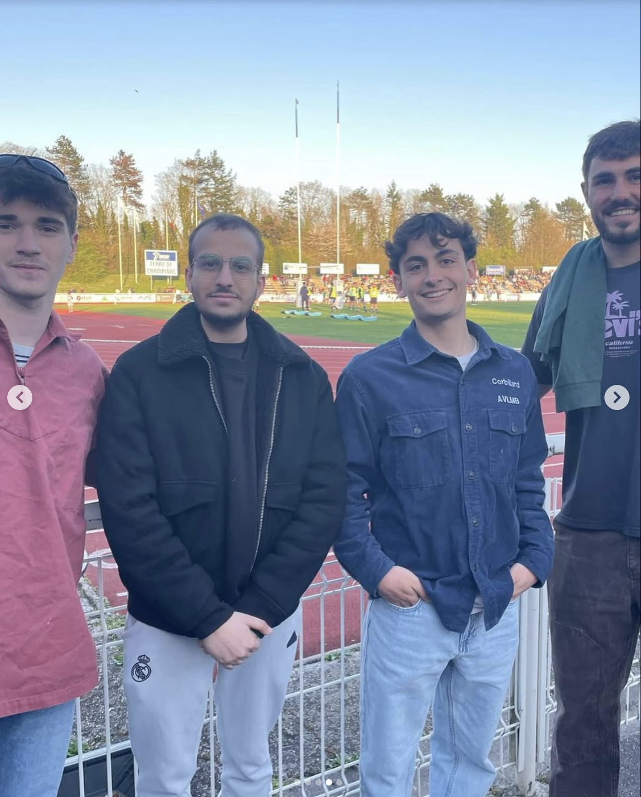
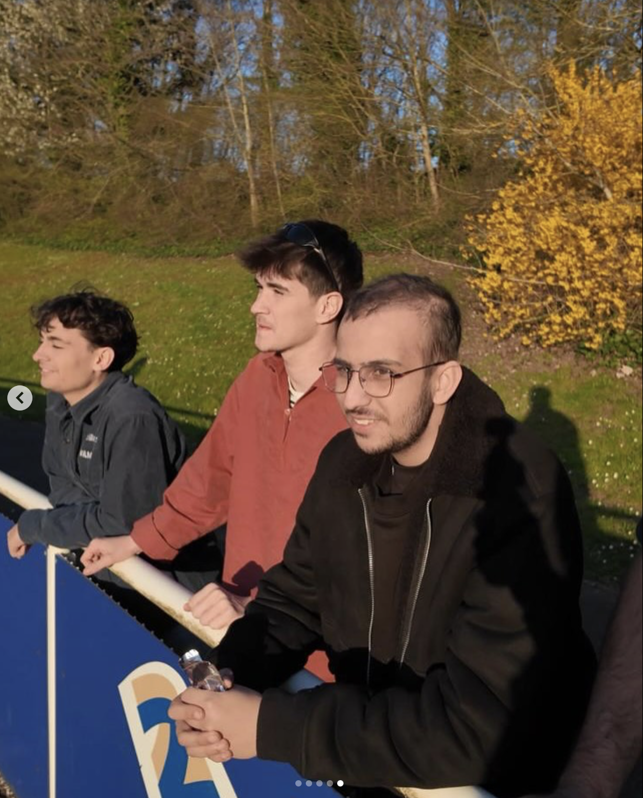
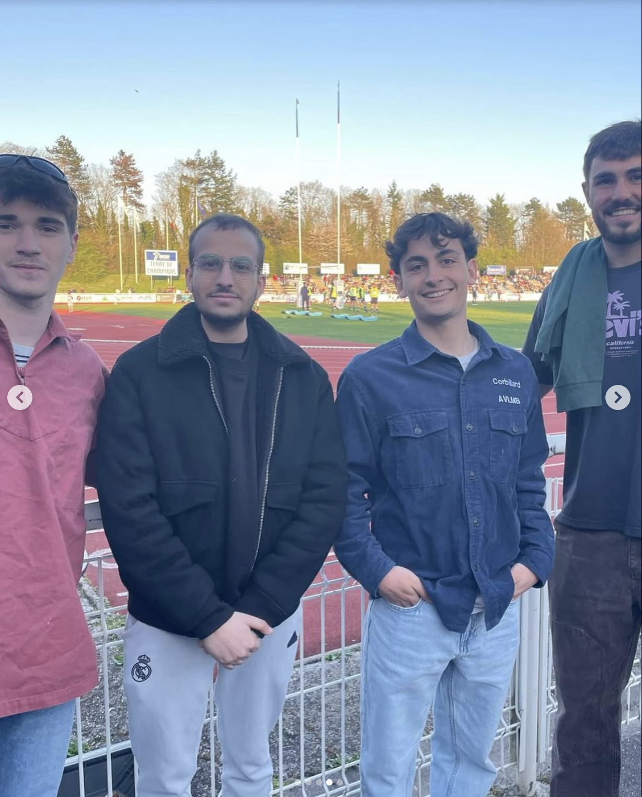

Activités Collectives
Découvrez nos activités collectives, pensées pour créer des souvenirs et renforcer les liens entre les jeunes accompagnés.
PSG VS Toulouse
Le 22 novembre, PSG s’est imposé 3-0 face à Toulouse dans une ambiance électrique, vécue de près par Wassim, Salim et toute la bande. Entre chants adverses et explosion de joie parisienne, ce match de Ligue 1 reste gravé comme un pur moment de passion ❤️💙⚽️


Mamma Mia
Mamma Mia en comédie musicale, quelle soirée ! ✨ Pauline et Héloïse ont embarqué Chloé, Axelle et Louna à la Seine Musicale pour chanter, danser et vibrer sur les plus grands classiques d’ABBA. Entre énergie débordante, costumes flamboyants et refrains repris en chœur, l’ambiance était tout simplement magique 💃🎶💙


Handball Maïa
Samedi 3 avril, Maïa a accompagné Valérie pour vivre les 1/8e de finale de Ligue des Champions de handball, PSG vs Szeged ❤️💙. Si le score n’a pas tourné en faveur de Paris, l’expérience a été inoubliable : intensité sur le terrain, frissons dans les tribunes et une ambiance survoltée portée par les Ultras 🔥👏. Un moment fort, gravé malgré la défaite.

Projet C7
Le 29 mars dernier, Mathis et Axel ont accompagné Stéphane pour une journée rugby aux couleurs de Massy en Nat.3 ğŸ‰. Au programme : une rencontre privilégiée avec le numéro 8 Simon Cowley, blessé mais présent pour partager l’expérience 🤩, visite exclusive des vestiaires et de la salle de sport 🏟️, avant de conclure la soirée par un combo parfait McDo 🔠+ bowling ğŸ³. Une journée sportive et conviviale qui restera dans les mémoires !
 



Hand : PSG vs Nantes
Le 9 mars, Axel et Ted, accompagnés de Kacper, Martyna, Ilya et Basile, ont vécu une soirée mémorable en assistant à la victoire du PSG handball 34-28 🏆. Entre actions spectaculaires, ambiance enflammée et frissons dans les tribunes, chacun a vibré aux couleurs parisiennes. Et pour couronner le tout, ils sont repartis avec un superbe cadeau : l’écharpe officielle du club 🔴🔵, souvenir parfait d’un moment unique !


PSG vs Lyon
Le 18 janvier, Victoria, Tomas et Maïa ont accompagné Kacper et sa sœur pour une soirée exceptionnelle au Parc des Princes 🏟️. Dans une ambiance survoltée, ils ont assisté au choc du football féminin entre le PSG et Lyon 🤪. Entre intensité sur le terrain, chants des supporters et magie des tribunes, cette soirée restera gravée comme un moment unique aux couleurs parisiennes ❤️💙.
PSG vs SCP
Le 30 octobre, Kacper, son papa et Chrislène ont vibré devant une victoire palpitante du PSG Handball en Ligue des Champions, remportée 30-28 🔥. Dans une salle en ébullition, ils ont vécu chaque but avec intensité… et ont eu la chance de repartir avec un souvenir inoubliable : une balle dédicacée par les joueurs ⚽️🔴🔵.